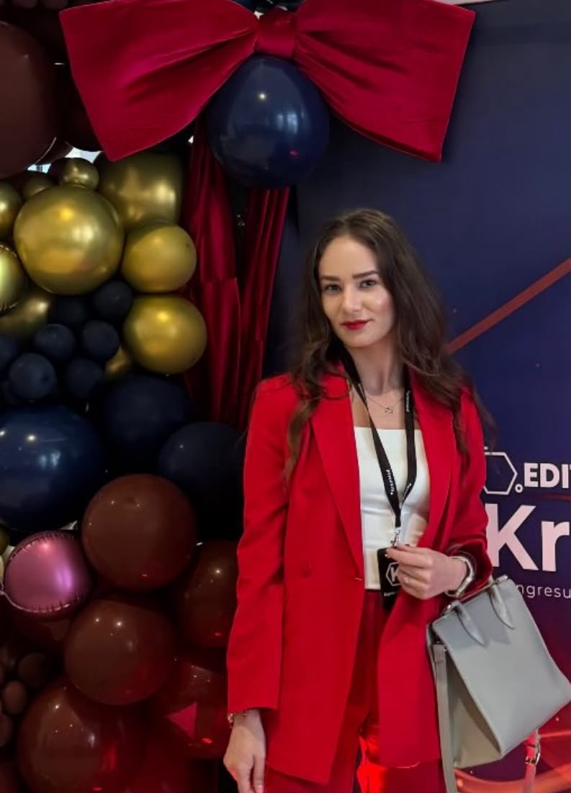
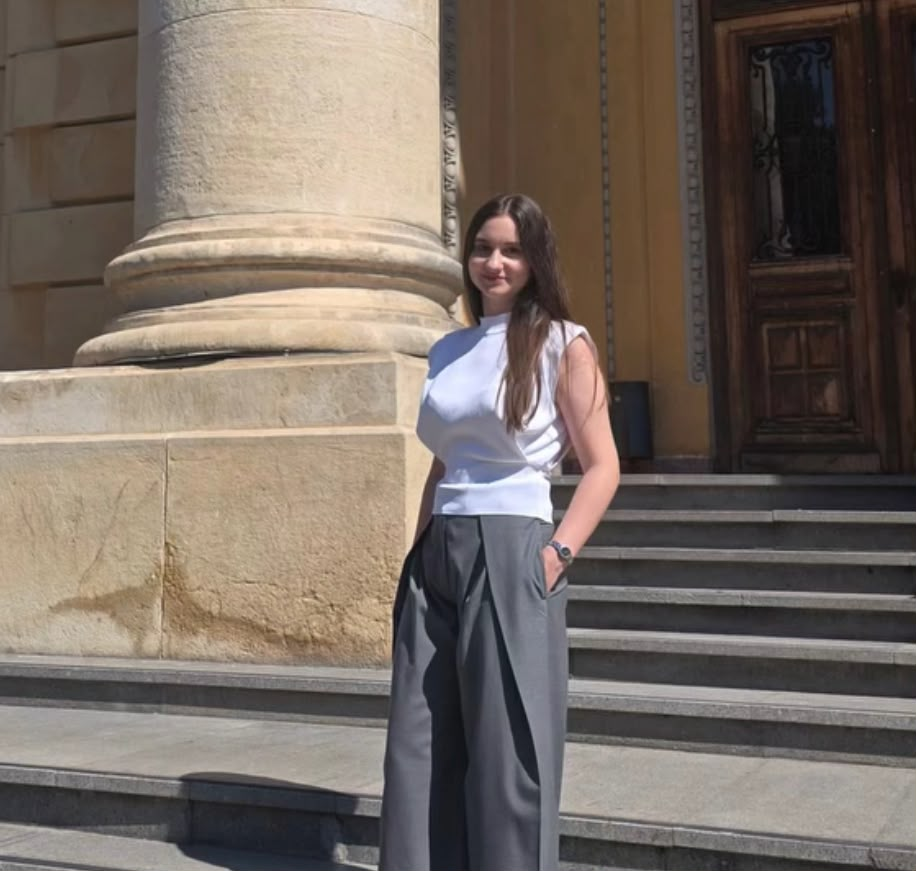

Program de Pregătire
Formula potrivită pentru BAC.
•
•
•
•
•

✦ Cum funcționează Formula X
Un program structurat, construit ca să te ajute exact acolo unde ai nevoie.
Mentorii Formula X au construit fiecare program pe săptămâni și teme clare, astfel încât pregătirea să fie ușor de urmărit. Orarul complet este afișat pe pagina fiecărei materii.
Completezi formularul de înscriere pentru materia dorită, iar echipa Formula X revine cu detaliile de organizare. Fiecare grupă are maximum 15 elevi, pentru ca mentorul să poată lucra atent cu fiecare participant.
Programul a fost conceput în primul rând pentru a ajuta elevii să aibă acces la pregătire de calitate, fără costurile ridicate ale meditațiilor clasice. Formula X este cel mai ieftin program de pregătire BAC din România.
🏷️ Cel mai ieftin program de pregătire BAC din România
👥 Grupe de maximum 15 elevi
🎥 Câte un Meet lunar gratuit la fiecare materie, în grupul WhatsApp
01
Alegi materia
Selectezi disciplina la care ai nevoie de sprijin și intri direct în programul mentorului.
02
Vezi orarul
Vezi programul complet al mentorului, cu săptămânile și temele afișate clar, apoi completezi formularul de înscriere.
03
Lucrezi țintit
Mentorul explică materia pas cu pas, răspunde întrebărilor și te ajută să corectezi dificultățile reale.
04
Construiești progres
Înveți organizat, exersezi constant și îți consolidezi materia într-un mod coerent și ușor de urmărit.
✦ Discuție individuală • 30 de minute
O întrebare poate schimba felul în care te pregătești pentru examenul de bacalaureat.
Rezervă o ședință gratuită de 30 de minute cu unul dintre mentorii Formula X. Poți discuta despre dificultățile întâmpinate, organizarea pregătirii sau o materie la care simți că ai nevoie de direcție. Alegi mentorul și ziua potrivită, iar noi te contactăm pentru a stabili ora exactă.
1Alegi mentorul
Selectezi disciplina la care vrei să primești sprijin.
Selectezi disciplina la care vrei să primești sprijin.
2Alegi ziua
Ne spui în ce zi ți-ar fi cel mai ușor să participi.
Ne spui în ce zi ți-ar fi cel mai ușor să participi.
3Stabilim ora împreună
Echipa Formula X te contactează ulterior pentru confirmarea intervalului orar.
Echipa Formula X te contactează ulterior pentru confirmarea intervalului orar.
Română • Bianca VarvaroiMatematică • Marius BengaBiologie • Theodora OprisFizică • Ioana VoineaChimie • Ilaria GrigorașGeografie • Stelea Aida
Formula X • 1 la 1
Solicită ședința gratuită
Completează formularul. După trimitere, te vom contacta pentru a stabili ora exactă a întâlnirii.
🎓 Sesiunea iunie – iulie 2027
Calendarul BAC 2027
Ține aproape datele importante ale examenului. Probele scrise sunt evidențiate separat, ca să vezi rapid zilele care contează cel mai mult.
14 iunie 2027
Limba și literatura română • proba E.a)
15 iunie 2027
Proba obligatorie a profilului • proba E.c)
17 iunie 2027
Proba la alegere a profilului și specializării • proba E.d)
5 – 9 aprilie 2027
Înscrierea candidaților pentru susținerea probelor A, B, C, D din cadrul examenului național de bacalaureat – 2027.
12 – 14 aprilie 2027
Evaluarea competențelor lingvistice de comunicare orală în limba română – proba A.
19 – 21 aprilie 2027
Evaluarea competențelor lingvistice într-o limbă de circulație internațională – proba C.
21 – 23 aprilie 2027
Evaluarea competențelor digitale – proba D.
31 mai – 4 iunie 2027
Susținerea probelor A, B, C, D pentru elevii prevăzuți la art. 18 alin. (4) din ordin.
31 mai – 4 iunie 2027
Înscrierea candidaților la probele scrise ale primei sesiuni de examen.
4 iunie 2027
Încheierea cursurilor pentru elevii claselor a XII-a / a XIII-a.
14 iunie 2027
Limba și literatura română – proba E.a) – proba scrisă.
15 iunie 2027
Proba obligatorie a profilului – proba E.c) – proba scrisă.
17 iunie 2027
Proba la alegere a profilului și specializării – proba E.d) – proba scrisă.
23 iunie 2027
Afișarea rezultatelor inițiale la probele scrise (până la ora 12:00), vizualizarea lucrărilor scrise și depunerea contestațiilor (14:00 – 18:00).
24 – 25 iunie 2027
Vizualizarea lucrărilor scrise și depunerea contestațiilor.
28 – 30 iunie 2027
Soluționarea contestațiilor.
📄 Resurse gratuite pentru BAC
Subiecte și bareme BAC 2019–2026
Accesează biblioteca de teste Formula X. Găsești subiectele și baremele împreună, organizate după materie, an și sesiune, cu subiectul și baremul disponibile direct.
Alege Materia
 ✒️
✒️Română
Mentor: Bianca Varvaroi
📐
Matematică
Mentor: Marius Benga

🧬Biologie
Mentor: Theodora Opris

⚛️Fizică
Mentor: Ioana Voinea
🧪
Chimie
Mentor: Ilaria Grigoraș
🌍
Geografie
Mentor: Stelea Aida
⏳ Mai este până la BAC
Numărătoare inversă până la prima probă scrisă
14 iunie 2027 • Limba și literatura română
0Zile
00Ore
00Minute
00Secunde
Teste și bareme BAC
Arhivă gratuită Formula X cu teste BAC, subiecte și bareme oficiale pentru 2019–2026. Alege materia, anul și sesiunea. Fiecare test are subiectul și baremul în același rând, iar pagina fiecărui test poate fi găsită separat în Google.
Formula X • Progres personal
Contul meu
Traseul tău pentru examenul de bacalaureat, testele rezolvate, rezultatele și evoluția — toate într-un singur loc.
Cont Formula X • Pregătire pentru examenul de bacalaureat
Transformă pregătirea într-un parcurs clar și măsurabil.
Configurează profilul, specializarea și proba E.d, apoi urmărește separat progresul la cele trei probe scrise relevante pentru examenul de bacalaureat. Toată arhiva rămâne disponibilă, iar rezultatele tale sunt păstrate în cont.
01Marchezi variantele rezolvateAi o evidență clară a variantelor parcurse și a celor rămase.
02Înregistrezi rezultatele obținuteSalvezi nota și urmărești evoluția de la o încercare la alta.
03Monitorizezi progresul pe fiecare probăLimba și literatura română, proba obligatorie a profilului și proba E.d.
04Lucrezi în Camera de studiuRezolvi o variantă cu cronometru și înregistrezi punctajul, nota și timpul efectiv.
Traseul meu38 / 164variante rezolvate
Media mea8,47în creștere ↗
Toată arhiva rămâne disponibilă. Variantele corespunzătoare profilului și probelor tale sunt numerotate și incluse în progresul pentru examen; celelalte pot fi lucrate ulterior ca exercițiu suplimentar.
Cont Formula X
Conectare
Conectează-te pentru a continua monitorizarea pregătirii pentru examenul de bacalaureat.
Înregistrare
Creează cont Formula X
După confirmarea adresei de email, îți configurezi traseul personal pentru examenul de bacalaureat.
Securitate cont
Alege o parolă nouă
Monitorizarea pregătirii
Bun venit!
Completează traseul pentru monitorizarea personalizată a pregătirii pentru examenul de bacalaureat.
Camera de studiu
Simulează o probă în condiții apropiate examenului.
Alege o variantă, pornește cronometrul de 3 ore, rezolvă subiectul fără a consulta baremul, apoi înregistrează punctajul, nota și timpul efectiv de lucru.
Recomandarea de astăzi
Continuă pregătirea într-un mod structurat
Formula X va selecta o variantă relevantă în funcție de progresul tău.
Parcurs principal finalizat
EXPLOREAZĂ TESTE SUPLIMENTARE →
Ai parcurs toate testele corespunzătoare profilului și probelor tale.
Ai finalizat setul principal recomandat pentru examenul de bacalaureat. Pentru consolidare, îți recomandăm să continui cu variante din alte profile: vei întâlni formulări și cerințe diferite, fără ca acestea să modifice procentul traseului tău principal.
Evoluție
ÎNCEPE URMĂTORUL TEST →
Graficul notelor
Nu ai încă rezultate înregistrateSăptămâna aceasta
Obiectivul tău
0 / 3variante
Cele trei probe scrise
VEZI TOATE TESTELE →Progresul pentru examenul de bacalaureat
Platforma urmărește separat cele trei probe scrise relevante traseului tău: Limba și literatura română, proba obligatorie a profilului și proba E.d aleasă. Variantele din celelalte profile rămân disponibile pentru consolidare suplimentară.
Caietul greșelilor
Zone de consolidat
Dificultățile pe care le semnalezi la variante sunt centralizate automat. Astfel vezi rapid ce merită recapitulat.
Reluare
Variante de reluat
Jurnal personal
Observațiile mele
Raport săptămânal
Activitatea ta de pregătire
Variante0
Media rezultatelor—
Timp cronometrat—
Față de săptămâna trecută—
Înregistrează primele rezultate pentru a genera raportul săptămânal.
Istoric
Ultimele încercări
Jurnalul de pregătire
Analizează varianta
Notează dificultățile întâmpinate. Informațiile sunt personale și sunt vizibile numai în contul tău Formula X.
Cum ai perceput dificultatea variantei?
Ce dificultăți ai întâmpinat?
Poți selecta mai multe opțiuni. Lista se adaptează automat materiei.
Observații personale
Personalizare Formula X
Configurează traseul pentru examenul de bacalaureat
Alege profilul, specializarea și proba E.d. Toate variantele rămân vizibile în arhivă, însă numai cele relevante celor trei probe ale examenului tău vor fi numerotate și incluse în progresul principal.
Formula X • Camera de studiu
Simulare individuală cronometrată
Alege o variantă și lucreaz-o într-o sesiune de 3 ore, cu monitorizarea timpului efectiv. După finalizare, baremul oficial se deschide automat în pagină, apoi înregistrezi punctajul, nota și durata de lucru.
Pasul 1
Timp recomandat: 3 ore
Selectează varianta pentru sesiunea de studiu
Selectează o variantă pentru a vedea detaliile sesiunii.
Sesiune în desfășurare
În lucru
Test selectat
Cronometru — examenul de bacalaureat
Durată alocată: 03:00:00
03:00:00
Timp efectiv de lucru00:00:00
Stare sesiuneÎn desfășurare
Pentru ca rezultatul să fie relevant, recomandăm să lucrezi fără a consulta baremul până la finalizarea sesiunii.
Pasul 3
Evaluează lucrarea și înregistrează rezultatul
Timp de lucru: —
Baremul oficial s-a deschis mai jos. Corectează lucrarea, apoi introdu punctajul final, incluzând cele 10 puncte acordate din oficiu. Platforma va păstra nota și timpul efectiv de lucru.
Nota rezultată—Punctaj ÷ 10
Mentorul Tău
Bianca Varvaroi
Bianca Varvaroi este studentă în anul I la Facultatea de Automatică și Calculatoare din cadrul Universității Tehnice din Cluj-Napoca și, în cadrul Formulei X, se ocupă de pregătirea pentru BAC la Limba Română.
Este calmă, răbdătoare și pune accent pe explicații logice, fără să complice inutil materia. La ședințe lucrează mult cu structuri clare, scheme, imagini și explicații vizuale, astfel încât informația să fie mai ușor de înțeles și de reținut.
Metoda ei pornește de la ideea că pregătirea la română nu trebuie să însemne memorarea mecanică a unor pagini întregi, ci înțelegerea structurii fiecărui răspuns, a baremului și a modului în care informația poate fi aplicată indiferent de subiect.
📩 Înscriere Formula X
Înscrie-te la program
Completează formularul, iar cererea ajunge direct la echipa Formula X. Orarul complet este afișat mai jos pe pagina materiei, iar grupa are maximum 15 elevi. În grupul WhatsApp Formula X găsești și câte un Meet lunar gratuit pentru fiecare materie.
📚 Limba Română
👩🏫 Mentor: Bianca Varvaroi
👥 Maximum 15 elevi / grupă
💻 Online
🎓 BAC 2027
Calendar de Pregătire Intensivă la Limba Română
Subiectul I
Săptămâna 1
15 - 21 septembrie
A. Cum luăm punctaj maxim la subiectul I? (Fiecare exercițiu detaliat)
B. Structura generală a textului argumentativ (conform baremului)
B. Structura generală a textului argumentativ (conform baremului)
Subiectul al II-lea – Partea 1 & 2
Săptămâna 2
22 - 28 septembrie
1. Perspectiva narativă obiectivă
2. Perspectiva narativă subiectivă
3. Rolul notațiilor autorului
2. Perspectiva narativă subiectivă
3. Rolul notațiilor autorului
Săptămâna 3
29 sept. - 5 oct.
4. Două modalități de caracterizare
5. Ideea poetică
5. Ideea poetică
Subiectul al III-lea – Epic
Săptămâna 46 - 12 octombrie
1. Povestea lui Harap-Alb, Ion Creangă
Săptămâna 513 - 19 octombrie
2. Moara cu noroc, Ioan Slavici
Săptămâna 620 - 26 octombrie
3. Baltagul, Mihail Sadoveanu
Săptămâna 727 oct. - 2 nov.
4. Ion, Liviu Rebreanu
Săptămâna 83 - 9 noiembrie
5. Ultima noapte de dragoste, întâia noapte de război, Camil Petrescu
Săptămâna 910 - 16 noiembrie
6. Enigma Otiliei, George Călinescu
Săptămâna 1017 - 23 noiembrie
7. Moromeții, Marin Preda
RECAPITULARE EPIC + KAHOOT 🏆
RECAPITULARE EPIC + KAHOOT 🏆
Liric
Săptămâna 1124 - 30 noiembrie
1. Luceafărul - Mihai Eminescu | 2. Plumb - George Bacovia
Săptămâna 121 - 7 decembrie
3. Testament - Tudor Arghezi | 4. Eu nu strivesc corola de minuni a lumii - Lucian Blaga
Săptămâna 138 - 14 decembrie
5. Riga Crypto și Lapona Enigel - Ion Barbu | 6. Aci sosí pe vremuri - Ion Pillat
Săptămâna 1415 - 21 decembrie
7. Leoaică tânără, iubirea - Nichita Stănescu
RECAPITULARE LIRIC + KAHOOT 🏆
RECAPITULARE LIRIC + KAHOOT 🏆
❄️ PAUZĂ DE IARNĂ ❄️
Dramatic
Săptămâna 155 - 11 ianuarie
1. Iona, Marin Sorescu | 2. O scrisoare pierdută, Ion Luca Caragiale
Săptămâna 1612 - 18 ianuarie
RECAPITULARE COMPLEXĂ – TOATE SUBIECTELE:
• Sinteze și scheme esențiale • Exerciții aplicate • Clarificări • KAHOOT 🏆
• Sinteze și scheme esențiale • Exerciții aplicate • Clarificări • KAHOOT 🏆
Săptămâna 17 (Bonus)19 - 25 ianuarie
SIMULARE COMPLETĂ ÎN CONDIȚII DE EXAMEN!
• Simulare completă în condiții de examen • Corectare și feedback personalizat
• Simulare completă în condiții de examen • Corectare și feedback personalizat
Ce spun elevii Biancăi
Recenzii reale direct de la sesiunile de pregătire
"Am o părere minunată despre meetul de astăzi. Sunt încântată, predai foarte bine, ești calmă, răspunzi tuturor întrebărilor, treci de la general la particular și ești foarte empatică. M-ai ajutat să înțeleg în 40 de minute structura subiectului, cum se punctează și la ce să fim atenți."
"M-a ajutat mult (și mi-a plăcut) să discut cu tine pe baza eseului... Strategia pe care mi-ai explicat-o, despre cum pot să iau un punctaj cât mai mare, a clarificat nelămurirea pe care o aveam. Suportul vizual este un avantaj enorm pentru a învăța mai ușor!"
"Meetul din seara asta a fost super, mi-a plăcut că ne-ai explicat tot pe înțelesul nostru și asta cred că mi-a dat un plus de încredere și puțin mai mult chef să mă duc să mai repet, mulțumim!!"
"Are o calmitate aparte și un mod de a explica cu foarte mult drag și răbdare... În iunie am luat 5.30 la română, iar datorită implicării tale am reușit să ajung la 6,60 într-un timp destul de scurt. Sunt foarte mulțumită!"
"La prima simulare am luat 4,80 iar la a doua 5,90 și sincer nu credeam că pot ajunge la o notă mai mare. Cu explicațiile și exercițiile făcute împreună am ajuns să iau punctaj maxim... La Bac am obținut 9,15 la limba română și sunt foarte recunoscătoare. O recomand cu mare drag oricui!"
⏳ Mai este până la BAC
Countdown până la proba de Limba și literatura română
Proba E.a) • 14 iunie 2027
0Zile
00Ore
00Minute
00Secunde
Mentorul tău
Marius Benga
Marius Benga are peste 6 ani de experiență în pregătirea elevilor la matematică și pune accent pe un lucru esențial: fiecare exercițiu trebuie înțeles, nu doar memorat.
De-a lungul timpului a pregătit elevi cu obiective și niveluri diferite, inclusiv elevi care au ajuns la nota 10. La ședințe explică răbdător, clar și logic, descompunând problemele în pași simpli, astfel încât materia să devină mai ușor de urmărit.
Pregătirea este orientată spre BAC, pentru M1, M2 și M3, cu exerciții atent alese, teme, feedback și recapitulări. Scopul nu este să înveți o rezolvare pe de rost, ci să știi de ce aplici fiecare formulă și cum recunoști singur metoda potrivită.
6+ aniexperiență
M1 • M2 • M3pregătire pentru BAC
📩 Înscriere Formula X
Înscrie-te la program
Completează formularul, iar cererea ajunge direct la echipa Formula X. Orarul complet este afișat mai jos pe pagina materiei, iar grupa are maximum 15 elevi. În grupul WhatsApp Formula X găsești și câte un Meet lunar gratuit pentru fiecare materie.
📚 Matematică
👩🏫 Mentor: Marius Benga
👥 Maximum 15 elevi / grupă
💻 Online
🎓 BAC 2027
Calendar de pregătire BAC20 de săptămâni • pas cu pas
I
Etapa I — Subiectul I
15 septembrie – 2 noiembrie 2026
1
15–21 sept.
Progresii aritmetice și geometrice + Numere complexe
2
22–28 sept.
Funcții
3
29 sept.–5 oct.
Ecuații iraționale, logaritmice și exponențiale
4
6–12 oct.
Probabilități, procente și metode de numărare
5
13–19 oct.
Geometrie analitică + Vectori (I)
6
20–26 oct.
Geometrie analitică + Vectori (II)
7
27 oct.–2 nov.
Elemente de trigonometrie (I)
II
Etapa II — Subiectul II
3 noiembrie – 14 decembrie 2026
8
3–9 nov.
Elemente de trigonometrie (II)
9
10–16 nov.
Matrice și determinanți
10
17–23 nov.
Sisteme de ecuații liniare
11
24–30 nov.
Legi de compoziție (I)
12
1–7 dec.
Legi de compoziție (II)
13
8–14 dec.
Polinoame
III
Etapa III — Subiectul III
15 decembrie 2026 – 1 februarie 2027
14
15–21 dec.
Derivate: introducere
15
22–28 dec.
Rolul primei derivate (I)
16
29 dec.–4 ian.
Rolul primei derivate (II)
17
5–11 ian.
Rolul celei de-a doua derivate
18
12–18 ian.
Asimptote + Ecuații tangente
19
19–25 ian.
Limite
20
26 ian.–1 feb.
Integrale: introducere + aplicații
Înveți organizat. Exersezi constant. Reușești.
Ce spun elevii lui Marius Benga
Feedback real de la sesiunile de pregătire la matematică
💬 Claritate
„Vreau să vă mulțumesc pentru această ședință gratuită. Mi-a plăcut foarte mult modul în care ați explicat subiectul de BAC – totul a fost clar, bine structurat și ușor de urmărit.”
🤝 Încredere
„Mi-a plăcut foarte mult această pregătire pentru bacul la matematică! Chiar m-a ajutat să înțeleg mai bine lucrurile și să prind mai multă încredere. Mulțumesc mult pentru timpul și răbdarea acordată! Recomand tuturor!! 🤗🤗”
🧠 Explicații
„Vă mulțumesc frumos pentru această întâlnire gratuită. Îmi place foarte mult stilul dumneavoastră de a explica exercițiile, m-ați făcut să înțeleg și să învăț lucruri noi. A fost o experiență plăcută și mă bucur că am avut această ocazie. Vă mulțumesc încă o dată 😊.”
💙 Răbdare și sprijin
„M-ai ajutat să înțeleg și mi-ai dat încredere că pot reuși.”
📐 Gândire logică
„M-ai făcut să gândesc logic exercițiile și mi-ai consolidat încrederea în mine.”
⏳ Mai este până la BAC
Countdown până la proba de Matematică
Proba obligatorie a profilului • E.c) • 15 iunie 2027
0Zile
00Ore
00Minute
00Secunde
Mentorul tău
Theodora Opris
Theodora Opris este studentă la Facultatea de Medicină Generală și are aproape 3 ani de experiență în pregătirea elevilor. În cadrul Formulei X se ocupă de pregătirea pentru BAC la Biologie, atât pentru elevii care vor să recupereze materia, cât și pentru cei care urmăresc să își consolideze cunoștințele și să obțină un rezultat cât mai bun.
Stilul ei de predare pornește de la o idee simplă: biologia nu trebuie memorată mecanic, pagină cu pagină. Noțiunile sunt explicate clar și logic, pas cu pas, prin conexiuni, scheme și exemple care ajută elevul să înțeleagă procesele și să rețină informația cu sens.
În ședințe pune accent pe exerciții și întrebări de fixare, metode de asociere a noțiunilor, corectarea greșelilor și recapitulare constantă. Atmosfera rămâne prietenoasă și deschisă, astfel încât fiecare elev să poată pune întrebări fără teamă și să capete treptat mai multă încredere.
Aproape 3 aniexperiență în pregătire
Medicină Generalăstudentă
Biologie BAClogic • structurat • aplicat
📩 Înscriere Formula X
Înscrie-te la program
Completează formularul, iar cererea ajunge direct la echipa Formula X. Orarul complet este afișat mai jos pe pagina materiei, iar grupa are maximum 15 elevi. În grupul WhatsApp Formula X găsești și câte un Meet lunar gratuit pentru fiecare materie.
📚 Biologie
👩🏫 Mentor: Theodora Opris
👥 Maximum 15 elevi / grupă
💻 Online
🧬 BIOLOGIE • BAC
Calendar de pregătire BAC 20 de săptămâni • de la noțiunile de bază la recapitulare și aplicare
I
Etapa I — Structura și funcționarea
Săptămânile 1 – 7
1
Săpt. 1
Alcătuirea corpului uman
2
Săpt. 2
Sistemul nervos (partea I)
3
Săpt. 3
Sistemul nervos (partea II)
4
Săpt. 4
Sistemul nervos (partea III)
5
Săpt. 5
Analizatori (partea I)
6
Săpt. 6
Analizatori (partea II)
7
Săpt. 7
Glande endocrine
II
Etapa II — Aparate și sisteme
Săptămânile 8 – 14
8
Săpt. 8
Locomotor: oase (partea I)
9
Săpt. 9
Locomotor: oase (partea II) + mușchi
10
Săpt. 10
Digestiv (partea I)
11
Săpt. 11
Digestiv (partea II)
12
Săpt. 12
Circulator (partea I)
13
Săpt. 13
Circulator (partea II)
14
Săpt. 14
Respirator
III
Etapa III — Reglare, coordonare și integrare
Săptămânile 15 – 20
15
Săpt. 15
Respirator (partea II)
16
Săpt. 16
Excretor
17
Săpt. 17
Reproducător (partea I)
18
Săpt. 18
Reproducător (partea II)
19
Săpt. 19
Genetică (clasa a XII-a)
20
Săpt. 20
Ecologie (clasa a XII-a)
Înveți organizat. Exersezi constant. Reușești!
Ce spun elevii Theodorei
Feedback real de la pregătirea la Biologie
🏆 Rezultat real • 9,50
„Heeeiii! Am luat 9,50 la test la bio după ce am învățat de pe notițele tale sistemul nervos 😍😍 Mulțumesc, sunt foarte utile 💞💞”
🌱 De la bază
„A fost greu pentru mine la început pentru că nu aveam noțiunile de bază, la școală ne-a fost predat doar să fie... dar acum înțeleg totul cum ar trebui să fie, iar desenele tale sunt extraordinare, iar lecțiile foarte, foarte bine făcute. Nu știu ce m-aș fi făcut fără ajutorul tău!!!! 💗💗”
💚 Calm și sprijin
„Îmi place din ce în ce mai mult să lucrez cu tine! Înțeleg foarte bine ceea ce explici și asta se datorează calmului de care dai dovadă și dorinței de a ne ajuta să înțelegem 🥰🥰”
⏳ Mai este până la BAC
Countdown până la proba de Biologie
Proba la alegere a profilului și specializării • E.d) • 17 iunie 2027
0Zile
00Ore
00Minute
00Secunde
Mentorul tău
Ioana Voinea
Ioana Voinea a ales drumul Medicinei, însă pasiunea ei pentru fizică a rămas la fel de puternică. În cadrul Formulei X, ea se ocupă de pregătirea elevilor pentru BAC la Fizică și pune accent pe înțelegerea logicii din spatele fiecărei formule și fiecărui tip de problemă.
La ședințe, elevii învață cum să recunoască tipul unei cerințe, cum să aleagă formula potrivită și cum să evite greșelile care costă puncte la examen. Explicațiile sunt clare, răbdătoare și orientate spre pași concreți, astfel încât fizica să nu mai pară o materie de memorat, ci una care poate fi înțeleasă și aplicată cu încredere.
Scopul ei nu este ca elevii să învețe modele pe de rost, ci să poată aborda cu calm și siguranță orice problemă nouă. Cu recapitulări, aplicații și probleme rezolvate pas cu pas, fizica ajunge să fie mai intuitivă, mai interesantă și mult mai accesibilă.
Fără memorare mecanicăformulele sunt explicate prin logică și sens
Probleme pas cu pasrecunoști cerința și alegi corect metoda
BAC la Fizicăteorie • probleme • recapitulare
📩 Înscriere Formula X
Înscrie-te la program
Completează formularul, iar cererea ajunge direct la echipa Formula X. Orarul complet este afișat mai jos pe pagina materiei, iar grupa are maximum 15 elevi. În grupul WhatsApp Formula X găsești și câte un Meet lunar gratuit pentru fiecare materie.
📚 Fizică
👩🏫 Mentor: Ioana Voinea
👥 Maximum 15 elevi / grupă
💻 Online
⚛️ BAC 2027
Calendar de pregătire la Fizică • 20 de săptămâni • pas cu pas
I
Etapa I — Electricitate
15 septembrie – 7 decembrie 2026
1
15–21 sept.
Curentul electric, intensitatea curentului, tensiunea electromotoare
2
22–28 sept.
Legea lui Ohm, rezistivitatea
3
29 sept.–5 oct.
Scurtcircuitul, mersul în gol
4
6–12 oct.
Tipuri de montaje (serie și paralel) — ampermetru și voltmetru
5
13–19 oct.
Legile lui Kirchhoff — probleme generale Kirchhoff
6
20–26 oct.
Gruparea rezistoarelor — aplicații
7
27 oct.–2 nov.
Gruparea generatoarelor electrice — aplicații
8
3–9 nov.
Transformarea triunghi–stea — probleme
9
10–16 nov.
Energia electrică și puterea electrică
10
17–23 nov.
Puterea maximă și randamentul
11
24–30 nov.
Unități de măsură și grafice
12
1–7 dec.
Recapitulare electricitate — probleme mixte
II
Etapa II — Termodinamică
8 decembrie 2026 – 1 februarie 2027
13
8–14 dec.
Noțiuni termodinamice de bază, mărimi de stare
14
15–21 dec.
Principiul I al termodinamicii, aplicații
15
22–28 dec.
L, U și Q — probleme
16
29 dec.–4 ian.
Coeficienți calorici și relația Robert Mayer
17
5–11 ian.
Aplicarea Principiului I la gazul ideal — probleme
18
12–18 ian.
Transformările simple ale gazului ideal, grafice
19
19–25 ian.
Principiul al II-lea al termodinamicii, aplicații
20
26 ian.–1 feb.
Ciclul Carnot, motoare termice
Înveți organizat. Exersezi constant. Reușești. Tu poți!
Ce spun elevii Ioanei
Recenzii reale de la ședințele de pregătire la fizică
⚡ Claritate și progres
„Ședința 1 la 1 m-a făcut pur și simplu să înțeleg fizica. Am făcut câteva exerciții pe care în mod normal nu le înțelegeam deloc, iar după doar o ședință fizica nu mai pare așa horror. Chiar m-a atras să merg pe această materie la BAC, pentru că am văzut că problema nu era la mine, ci faptul că nu îmi explicase cineva cum trebuie materia. Mulțumesc pentru această ședință și pentru toate explicațiile necesare.”
🤗 Răbdare și atenție
„Chiar mi-a plăcut modul în care ai explicat, fiindcă am reținut și înțeles totul instant. Mi-a plăcut și faptul că ai avut răbdare când ai explicat, dar și că ai așteptat după noi să scriem. Mulțumim!!”
😊 Încredere
„Ședința de astăzi mi-a întrecut orice așteptare. Mi-a plăcut că am putut pune întrebări ori de câte ori nu am înțeles ceva și am primit explicații până când lucrurile au devenit clare. Am prins încredere în mine și, după această ședință, BAC-ul nu mai pare imposibil.”
💜 Atmosferă deschisă
„Mi-a plăcut ședința și răbdarea pe care ai avut-o. Ai explicat pe înțelesul nostru și ne-am simțit liberi să vorbim și să punem întrebări, iar explicațiile au fost reluate ori de câte ori era nevoie.”
⏳ Mai este până la BAC
Countdown până la proba de Fizică
Proba la alegere a profilului și specializării • E.d) • 17 iunie 2027
0Zile
00Ore
00Minute
00Secunde
Mentorul tău
Ilaria Grigoraș
Ilaria Grigoraș este studentă în anul I la Universitatea de Medicină și Farmacie „Carol Davila” din București, la Medicină Generală, iar în cadrul Formulei X se ocupă de pregătirea pentru BAC la Chimie Organică.
La ședințe pune accent pe explicații clare și bine structurate, astfel încât fiecare elev să poată înțelege logica din spatele exercițiilor, indiferent de nivelul de la care pornește. Își dorește ca pregătirea pentru BAC să fie eficientă și accesibilă, fără costurile foarte mari asociate meditațiilor clasice.
Atmosfera este caldă și prietenoasă, iar elevii sunt încurajați să pună orice întrebare, fără teama de a fi judecați. Pentru Ilaria Grigoraș, progresul apare atunci când elevul are libertatea să spună ce nu înțelege, primește răbdare și poate exersa până când materia începe să aibă sens.
UMF „Carol Davila”Medicină Generală
Chimie Organicăpregătire pentru BAC
Onlineclar • calm • interactiv
📩 Înscriere Formula X
Înscrie-te la program
Completează formularul, iar cererea ajunge direct la echipa Formula X. Orarul complet este afișat mai jos pe pagina materiei, iar grupa are maximum 15 elevi. În grupul WhatsApp Formula X găsești și câte un Meet lunar gratuit pentru fiecare materie.
📚 Chimie Organică
👩🏫 Mentor: Ilaria Grigoraș
👥 Maximum 15 elevi / grupă
💻 Online
🧪 CHIMIE ORGANICĂ
Calendar de pregătire 20 de săptămâni pentru aprofundarea materiei
📅 20 săptămâni
💡 Teorie + exerciții
🎯 Pregătire pentru BAC
1
15–21 septembrie
Introducere în chimia organică, tipuri de compuși și tipuri de reacții
2
22–28 septembrie
Exerciții din introducere
3
29 sept. – 5 oct.
Alcani și benzine
4
6–12 oct.
Exerciții alcani și benzine
5
13–19 oct.
Alchene
6
20–26 oct.
Exerciții alchene
7
27 oct. – 2 nov.
Alchine
8
3–9 nov.
Exerciții alchine
9
10–16 nov.
Arene
10
17–23 nov.
Exerciții arene
11
24–30 nov.
Alcooli
12
1–7 dec.
Exerciții alcooli
13
8–14 dec.
Acizi carboxilici
14
15–21 dec.
Exerciții acizi carboxilici
15
22–28 dec.
Grăsimi și agenți tensioactivi
16
29 dec. – 4 ian.
Exerciții grăsimi și agenți tensioactivi
17
5–11 ian.
Aminoacizi și proteine
18
12–18 ian.
Exerciții aminoacizi și proteine
19
19–25 ian.
Zaharide
20
26 ian. – 1 feb.
Exerciții zaharide
Înveți organizat. Exersezi constant. Reușești. Tu poți!
Ce spun elevii Ilariei
Recenzii reale de la ședințele de pregătire la chimie
💬 Elev 1 • Claritate
„Heii! Mi-a plăcut foarte mult și meet-ul de azi. Îți apreciez foarte tare răbdarea pe care o ai și faptul că explici exact pe înțelesul tuturor. Mulțumesc încă o dată pentru oportunitate! ❤️”
🤍 Elev 2 • Răbdare
„Ședința de azi a fost mult mai frumoasă decât mă așteptam. Ne-ai răspuns la absolut toate întrebările și ai avut răbdare cu noi. O recomand cu drag pe Ilaria Grigoraș, este foarte dedicată. Veniți la pregătire din timp dacă vreți să luați o notă bună la BAC. 💗”
📘 Elev 3 • Explicații
„Ai explicat minunat, te-ai asigurat că am înțeles ceea ce ne-ai predat și ai lucrat pe exemple cu noi. Apreciez că ai răspuns tuturor întrebărilor și ne-ai oferit sfaturi în vederea bacalaureatului și admiterii. Meriți toate laudele!”
⚕️ Elev 4 • Experiență utilă
„Am participat la un meet gratuit al Ilariei unde am rezolvat un subiect de BAC, iar experiența a fost una plăcută. În afară de rezolvarea exercițiilor am aflat și diverse lucruri care ar ajuta foarte mult persoanele ce își doresc să dea la medicină. O experiență super bună din care poți învăța ușor chiar și dacă nu știi unele capitole! 🤗”
🎯 Elev 5 • Încredere
„Am apreciat că ai avut răbdare cu toți și că ai explicat pe înțelesul fiecăruia, indiferent de nivel. Deși îmi place chimia, mereu mi-a fost frică de subiectul 3 și întâlnirea cu tine m-a ajutat să scap de ea. Mulțumesc pentru oportunitate! You rock! 🤍”
💙 Elev 6 • Calm
„Explici minunat, îmi place că ești super calmă și ne ajuți când ne încurcăm sau nu suntem siguri pe noi. Mi-a făcut plăcere să particip la această ședință, ești super tare!! 🤍💙”
🧠 Elev 7 • Înțelegere pas cu pas
„A fost o ședință foarte bună și m-a ajutat să-mi fixez noțiuni pe care nu prea le-am priceput la clasă. Îmi place că stai și explici ca să înțeleagă oricine și că faci multe exerciții ca să vezi dacă elevii au înțeles. Ai explicat de ce răspunsurile greșite de la grilă sunt greșite și ai analizat fiecare pas. E mult mai fain să lucrezi cu o persoană care te îndrumă pe baza experienței proprii. Mulțumesc!”
🙌 Elev 8 • Interactivitate
„Am rămas plăcut surprinsă fiindcă am putut să participăm și noi direct și să răspundem la exerciții. Mi-a plăcut că au fost prezentate și explicate concepte care nu erau fix din exercițiile de la BAC și că ai avut răbdare să explici orice, oricui, cu calm. Se vede că ești pasionată. M-am bucurat enorm și că s-a trimis PDF-ul cu tot ce s-a lucrat.”
🧪 Elev 9 • Chimie organică
„Am participat la meet-ul de chimie organică și mi-a plăcut foarte mult! Explicațiile au fost foarte clare și bine structurate, iar unele lucruri pe care nu le înțelegeam înainte au devenit mult mai ușor de înțeles. Recomand cu drag, mai ales celor care vor să își consolideze bazele la chimie organică! 😊”
✨ Elev 10 • Atmosferă
„Mi-a plăcut enorm întâlnirea în care s-a rezolvat un subiect tip BAC la chimie organică. Vă pricepeți să explicați și apreciez răbdarea. Îmi place că destindeți atmosfera și că vă luați timpul necesar pentru a explica în detaliu, astfel încât să înțeleagă toată lumea. Mulțumesc încă o dată pentru răbdare!”
⏳ Mai este până la BAC
Countdown până la proba de Chimie
Proba la alegere a profilului și specializării • E.d) • 17 iunie 2027
0Zile
00Ore
00Minute
00Secunde
Mentorul tău
Stelea Aida
Stelea Aida are un an de experiență în pregătirea elevilor și a obținut nota 9,55 la proba de Geografie a examenului de Bacalaureat. A ales să predea această materie din pasiune și din dorința de a le arăta elevilor că geografia poate fi înțeleasă simplu și logic, fără memorarea mecanică a sute de detalii.
În cadrul Formulei X, stilul ei de predare se bazează pe conexiuni logice, hărți interactive și scheme vizuale, care transformă informația într-un ansamblu ușor de urmărit și de reținut. La ședințe explică răbdător fiecare fenomen prin relații de tip cauză–efect, punând accent direct pe cerințele baremului și pe tipurile de subiecte specifice examenului.
Atmosfera rămâne mereu prietenoasă și deschisă, oferindu-le elevilor spațiul necesar pentru a pune întrebări, a-și corecta greșelile și a căpăta încrederea necesară pentru a obține o notă excelentă la BAC.
1 anexperiență în pregătire
9,55 la BACGeografie
Hărți + logicăcauză–efect • vizual
📩 Înscriere Formula X
Înscrie-te la Geografie
Completează formularul, iar cererea ajunge direct la echipa Formula X. Programul complet este afișat mai jos, iar grupa are maximum 15 elevi.
🌍 Geografie👩🏫 Mentor: Stelea Aida👥 Maximum 15 elevi / grupă💻 Online
🌍 GEOGRAFIE • BAC
Plan de pregătire 19 săptămâni • Europa → România → Populație → Simulare
I
Subiectul I — Europa
Săptămânile 1 – 6
1
Săpt. 1
15 – 21 septembrie
15 – 21 septembrie
Europa – elemente geografice de bazăPoziția geografică; limite și vecini; state și capitale; unități și forme de relief; fluvii și lacuri; mări și oceane.
2
Săpt. 2
22 – 28 septembrie
22 – 28 septembrie
Clima EuropeiFactorii genetici ai climei; elemente climatice; tipuri de climă; temperaturi și precipitații; influența Oceanului Atlantic; vânturi și mase de aer; exerciții pe hărți climatice.
3
Săpt. 3
29 septembrie – 5 octombrie
29 septembrie – 5 octombrie
Vegetația, solurile și țărmurile EuropeiZone de vegetație și tipuri de soluri; legătura climă–vegetație–soluri; mări și oceane; peninsule; insule și arhipelaguri; golfuri; strâmtori; exerciții de localizare.
4
Săpt. 4
6 – 12 octombrie
6 – 12 octombrie
Relieful și hidrografia EuropeiUnități majore de relief; munți și podișuri; câmpii; principalele fluvii și lacuri; mări și bazine hidrografice; exerciții de localizare și asociere.
5
Săpt. 5
13 – 19 octombrie
13 – 19 octombrie
Resurse naturale + harta politică a EuropeiResurse energetice, minerale, forestiere și de apă; repartizarea resurselor; modificări pe harta politică a Europei după 1990.
6
Săpt. 6
20 – 26 octombrie
20 – 26 octombrie
Verificare – EuropaTest de recapitulare: state și capitale, hartă, climă, relief, hidrografie, vegetație și soluri, țărmuri, resurse naturale și modificări politice după 1990.
II
Subiectul II — România
Săptămânile 7 – 12
7
Săpt. 7
27 octombrie – 2 noiembrie
27 octombrie – 2 noiembrie
România – elemente geografice de bază + așezările ruralePoziție geografică; limite și vecini; unități administrative; județe și reședințe; tipuri de sate, structură, formă și repartiția așezărilor rurale.
8
Săpt. 8
3 – 9 noiembrie
3 – 9 noiembrie
Clima, vegetația și solurile RomânieiFactorii genetici; temperatură; precipitații; vânturi; etajare și influențe climatice; zone și etaje de vegetație; tipuri și repartiția solurilor; legătura relief–climă–vegetație–sol.
9
Săpt. 9
10 – 16 noiembrie
10 – 16 noiembrie
Relieful RomânieiCaracteristici generale; Carpați; Subcarpați; dealuri și podișuri; câmpii; Delta Dunării; depresiuni; unități și subunități de relief – localizare pe hartă.
10
Săpt. 10
17 – 23 noiembrie
17 – 23 noiembrie
Hidrografia României + Dunărea și Marea NeagrăDunărea; principalele râuri; lacuri; ape subterane; Marea Neagră; Delta Dunării; sectorul românesc al Dunării și importanța economică.
11
Săpt. 11
24 – 30 noiembrie
24 – 30 noiembrie
Resurse naturale + economia României + țările vecinePetrol și gaze, cărbuni, minereuri, resurse de apă și forestiere; agricultură, industrie, transporturi, comerț, servicii și turism; Ucraina, Republica Moldova, Bulgaria, Serbia și Ungaria.
12
Săpt. 12
1 – 7 decembrie
1 – 7 decembrie
Verificare – RomâniaJudețe și reședințe; vecini; relief; climă; hidrografie; Dunărea și Marea Neagră; vegetație și soluri; resurse; economie; exerciții pe hartă.
III
Subiectul III — Populația Europei și a României
Săptămânile 13 – 16
13
Săpt. 13
8 – 14 decembrie
8 – 14 decembrie
Populația EuropeiBilanț natural: natalitate, mortalitate, spor natural; mobilitate teritorială și migrație; densitatea populației; structura pe vârste, sexe, socio-economică și urban/rural.
14
Săpt. 14
15 – 21 decembrie
15 – 21 decembrie
Populația RomânieiBilanț natural; evoluția populației; bilanț migratoriu; imigrație, emigrație și sold migratoriu; densitate; structura pe vârste, sexe, urban/rural și activă/inactivă.
15
Săpt. 15
22 – 28 decembrie
22 – 28 decembrie
VacanțăPauză de sărbători. Recapitularea generală continuă după vacanță.
16
Săpt. 16
5 – 11 ianuarie
5 – 11 ianuarie
Exerciții – Subiectul IIICalculul densității, sporului natural și bilanțului migratoriu; interpretarea datelor statistice, graficelor și hărților; compararea regiunilor/țărilor; procente, diferențe și Exercițiul E.
IV
Recapitulare generală și simulare
Săptămânile 17 – 19
17
Săpt. 17
12 – 18 ianuarie
12 – 18 ianuarie
Recapitulare – Europa + RomâniaEuropa: state și capitale, relief, climă, hidrografie, țărmuri, vegetație și soluri, resurse, populație, modificări politice și hărți. România: județe, vecini, relief, climă, hidrografie, Dunărea și Marea Neagră, resurse, economie, populație și hărți.
18
Săpt. 18
19 – 25 ianuarie
19 – 25 ianuarie
Recapitulare complexă – toate subiecteleSubiectele I, II și III; hărți mute; localizare; calcule; interpretarea graficelor și hărților; greșeli frecvente; sinteze și scheme esențiale.
19
Săpt. 19
26 ianuarie – 1 februarie
26 ianuarie – 1 februarie
BONUS – simulare completă în condiții de examenSubiectul I – Europa; Subiectul II – România; Subiectul III – populație și exerciții; timp de lucru ca la examen; corectare după barem; feedback personalizat și recapitularea punctelor slabe.
🏆 OBIECTIV FINAL: PUNCTAJ MAXIM LA GEOGRAFIE!